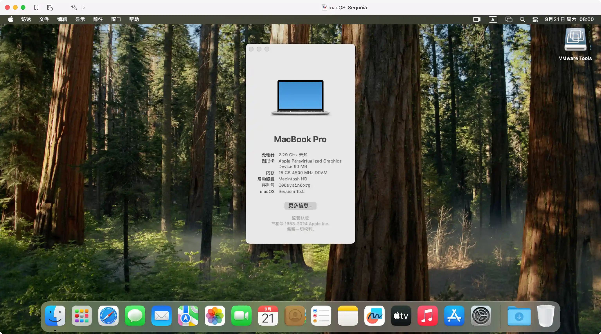

请访问原文链接：macOS Sequoia 15.7.7 (24G720) Boot ISO 原版可引导映像下载 查看最新版。原创作品，转载请保留出处。
作者主页：sysin.org
macOS Sequoia 将 Mac 生产力与智能化提升至全新高度

图：macOS Sequoia 运行在 Fusion 13 中，并开启了 Metal GPU 加速。
iPhone 镜像、Safari 浏览器重大更新和 Apple Intelligence 等众多全新功能令 Mac 使用体验再升级

macOS Sequoia 以 iPhone 镜像拓展连续互通功能、新增生产力与视频会议工具，并为即将推出的多款游戏带来更具沉浸感的游戏体验。
加利福尼亚州，库比提诺，Tim Cook 领导的 Apple 今日发布 macOS Sequoia，这一全球领先的桌面操作系统迎来重要升级，为 Mac 带来全新工作方式与变革性的智能化功能。macOS Sequoia 满载一系列震撼人心的新功能 (sysin)，包括进一步扩展了连续互通的 iPhone 镜像，用户可以直接从 Mac 上完全访问并控制 iPhone。Safari 浏览器得到重大更新，全新的 Highlights 功能让用户在浏览网页时更轻松地找到所需信息。新 Passwords app 集所有密码和凭证于一处，方便用户取用和管理。Mac 游戏体验更具沉浸感，同时有众多全新游戏佳作登陆 Mac，包括《刺客信条：影》和《Frostpunk 2》等更多作品。
macOS Sequoia 还带来适用于 Mac、iPhone 和 iPad 的个人智能化系统 Apple Intelligence，基于个人场景发挥生成式模型的强大功用，结合用户场景提供有助益且相关的智能化功能。Apple Intelligence 从设计之初就十分注重用户隐私，并深度集成于 macOS Sequoia、iOS 18 和 iPadOS 18。它能理解并生成语言和图像、跨 app 执行操作 (sysin)，运用个人场景，为日常任务简化步骤、增效提速。Apple Intelligence 充分利用 Apple 芯片和神经网络引擎的卓越功能，将为搭载 M 系列芯片的 Mac 提供强大助力。
“强大的 Apple 芯片与易用的 macOS 相结合，令 Mac 设备空前强大。我们十分高兴能通过 macOS Sequoia 将 macOS 推至全新境界，这一重要更新将大大提升生产力与智能化程度。”Apple 软件工程高级副总裁 Craig Federighi 表示，“macOS Sequoia 引入 Apple Intelligence，解锁不可思议的全新功能 (sysin)，为使用 Mac 工作带来颠覆性的体验。macOS Sequoia 还有更多方式助力用户轻松完成事项，包括 iPhone 镜像在内的连续互通新功能、Safari 浏览器重大更新，以及一系列新游戏。相信 Mac 用户一定会爱上它。”
ISO 映像的优势
相对于官方发布 pkg 映像（另有 ipsw 映像，但仅适用于 Apple 芯片），以及第三方制作的 dmg 映像，ISO 格式具有以下优势：
- 可以直接拖拽到 Applications（应用程序）目录下（无需管理员权限），进行升级安装
- 可以直接双击挂载，执行命令写入 USB 存储设备或者其他卷，然后启动全新安装（无需拖拽到“应用程序”目录下）
- 可以直接启动虚拟机安装，介质本身为可引导映像
- 可以在 Windows 和 Linux 下写入 USB 存储设备，创建 USB 引导安装介质
- 跨平台支持，可以在任意操作系统中使用，其他格式仅限 macOS 专用
macOS Sequoia 硬件兼容性列表
笔者提示：“Apple Intelligence” (包括由其驱动的音频转写功能) 要求 搭载 Apple 芯片的 Mac 电脑。
看看你的 Mac 是否能用 macOS Sequoia
💻
🖥️
Mac mini 2018 and later 进一步了解 >
Mac Studio 2022 进一步了解 >
Mac Pro 2019 and later 进一步了解 >
iMac 2019 and later 进一步了解 >
iMac Pro 2017 and later 进一步了解 >
如果你的 Mac 不在兼容性列表，参看：在不受支持的 Mac 上安装 macOS Sequoia (OpenCore Legacy Patcher v2.4.1)
下载 macOS Sequoia ISO

本站原创可引导映像，可以在当前系统中安装或者升级，可以通过 USB 存储引导安装，也可以用于虚拟机安装。
- macOS Sequoia 15.7.7 (24G720) ISO
百度网盘链接：https://pan.baidu.com/s/1WV0QDHL3uXTvb3zFjkjXGw?pwd=<专享已公布>
SHA256SUM：5e1ebf11fe088a666521d8ce6bb2690e0af12657e5e1957727e432e3e537f363

✅ 公布获取此专享资源的正确方式：
为保证本站持续发展，该资源通过捐赠获取，捐赠是一种可以附加条件的行为，按照下面指定方式捐赠即可获得该项下载。
- 通过捐赠下载此版本：点击 💙支付宝 或者 💚微信支付，扫码备注邮箱（用于识别注册用户，忘记备注请提供时间），
评论区留言（以便发送链接，在其他平台留言恕无法处理）。24 小时内处理，白天会尽量及时，谢谢。 - 提示：捐赠或赞赏属于自愿赠予行为，提交后即表示您对作者的支持与认可。为避免误操作，请在确认前仔细检查金额，支付完成后将无法撤销或退还。
可指定版本，默认当前最新版。捐赠一次可获得一个版本，捐赠三次则该页面所有更新版本留言即可获取。
macOS Sequoia 15.7.5 (24G624) ISO
百度网盘链接：https://pan.baidu.com/s/16Y0UPS-7_DTVuTIZ_r8WTw?pwd=<专享已公布>
SHA256SUM：5edb71a54a817690fa562dcf25ff504a97df7b2583adc52d9f719f75a83ca617macOS Sequoia 15.7.4 (24G517) ISO
百度网盘链接：https://pan.baidu.com/s/1CSPlQC5NpSVWQwdtEjk2Bg?pwd=<专享已公布>
SHA256SUM：c54007f207876fa3c8db7eafc5bfda09173d8f4cf2d0565ed250df4741e57f3amacOS Sequoia 15.7.3 (24G419) ISO
百度网盘链接：https://pan.baidu.com/s/15LfD6q-eyHXlcjxPEMZeMQ?pwd=<专享已公布>
SHA256SUM：a5fa5e07925f40da6f39516596b32906f992934dc0090b3f29e05ae3d72c84c8macOS Sequoia 15.7.2 (24G325) ISO
百度网盘链接：https://pan.baidu.com/s/1XE98_jX1dEykweb3haiVXA?pwd=<专享已公布>
SHA256SUM：2104a9136b878d04fb75e46599c4d1c6b47c397f0df306813f04f8dcc034b3ddmacOS Sequoia 15.7.1 (24G231) ISO
百度网盘链接：https://pan.baidu.com/s/1VarTanD71jBzpVwY8BZK2w?pwd=<专享已公布>
SHA256SUM：ef442a211f0912f79551e0d2ba7e636a0a58ec9821ae069eaa4a02b6120aee3dmacOS Sequoia 15.7 (24G222) ISO
百度网盘链接：https://pan.baidu.com/s/1BKZQKIOvn3b3mHGuRHfKXg?pwd=<专享已公布>
SHA256SUM：1f162fa8f59d2bbf6a6c82be8aa895bd4906c2634eabea799d0679ccbb364431macOS Sequoia 15.6.1 (24G90) ISO
百度网盘链接：https://pan.baidu.com/s/1KA3K63ACEhowTZWFfUdeuw?pwd=<专享已公布>
SHA256SUM：9f0e8f8fc038be090919a7f68e990b84bf664152a1e6ff5e2ed065c519a4bed2macOS Sequoia 15.6 (24G84) ISO
百度网盘链接：https://pan.baidu.com/s/1heQx3dwMSslGQP1Qv7Bl-Q?pwd=<专享已公布>
SHA256SUM：95f142239efb374668a83edcd2069267d302ce000f6e93c87695dda9b0e39931macOS Sequoia 15.5 (24F74) ISO - 推荐版本
百度网盘链接：https://pan.baidu.com/s/1wnDGEwRBSvsCsb1ecDeXJw?pwd=<专享已公布>
SHA256SUM：a549bc0906b32405f30410a62bfc505b032c68fb8b0107d6b0ce2a27a8ab4ceamacOS Sequoia 15.4.1 (24E263) ISO
百度网盘链接：https://pan.baidu.com/s/1jyvICJBiKxV-1olDvu8yfQ?pwd=<专享已公布>
SHA256SUM：9b900f8faf524d19d331262e4d685a9f7fa36fb252254e2f26ae6667922aaa46macOS Sequoia 15.4 (24E248) ISO
百度网盘链接：https://pan.baidu.com/s/1DchUhHz2A1C5XLr16R2u3w?pwd=<专享已公布>
SHA256SUM：2c99739be987f9f50dd950037e2ae3a0291f0669d73fcb4310c68dd0ec564e1bmacOS Sequoia 15.3.2 (24D81) ISO
百度网盘链接：https://pan.baidu.com/s/1HApokDIVyMv3T0i6dRfDlw?pwd=<专享已公布>
SHA256SUM：a12c875a527ee2f03d0199e18f2df71774137f1e68099c1a25a24f667e373d84macOS Sequoia 15.3.1 (24D70) ISO
百度网盘链接：https://pan.baidu.com/s/1P3czan46GGM7PO4aDwYInA?pwd=<专享已公布>
SHA256SUM：1f590a4e0fd33b7255aef58db13060dce274b2438461ed7a499b294dbf3750d2macOS Sequoia 15.3 (24D60) ISO
百度网盘链接：https://pan.baidu.com/s/1bSmu1XL8elUSgzh5DYk3ng?pwd=<专享已公布>
SHA256SUM：5f9bc7624b15fc796a372cc277941934a0b923945864d79e9bc58551f6169d5dmacOS Sequoia 15.2 (24C101) ISO
百度网盘链接：https://pan.baidu.com/s/12keSAa-sJKsT_uRUOdmLOQ?pwd=<专享已公布>
SHA256SUM：632e9a3dee90f19793c512a63d96c3b8ba4fdfda4636e9c6621ecadc9864cbb4macOS Sequoia 15.1.1 (24B91) ISO
百度网盘链接：https://pan.baidu.com/s/1JMuj4r6Y_7Jh1mhmMxBobg?pwd=<专享已公布>
SHA256SUM：c3d86134fe6e49a7d5306cf5c71d3092b271196289246bd68af06ae8b3e4b62fmacOS Sequoia 15.1 (24B83) ISO
百度网盘链接：https://pan.baidu.com/s/1tgG6Ibde_qQJiAUW0PRpPQ?pwd=<专享已公布>
SHA256SUM：9c8047b927a9eca2f231c60021189d47f7b6856d95bc1c404f4c17bff6b37bedmacOS Sequoia 15.0.1 (24A348) ISO
百度网盘链接：https://pan.baidu.com/s/1AOe6JJ6Aj74OeKvCl7o1nw?pwd=<专享已公布>
SHA256SUM：10bf4263af905b7bae290de80b41abf1d7667edfa18d200730678af56ec32da1macOS Sequoia 15.0 (24A335) ISO
百度网盘链接：https://pan.baidu.com/s/1yQEXicfM_K75I0fzO2WDng?pwd=4a72
SHA256SUM：a675bae5e3f567b1b49f62ca0829aeebd13afd2346201514c6ac123b4330d3de
参看：如何在 Mac 和虚拟机上安装 macOS Tahoe、macOS Sequoia 和 macOS Sonoma
这里列出 ISO 启动映像下载链接，更多格式请访问以下地址：
适用的 VMware 软件下载链接
建议在以下版本的 VMware 软件中运行（Linux OVF 无需本站定制版可以正常运行，macOS 虚拟化如果不是 Mac 必须使用定制版才能运行，Windows OVF 需要定制版才能启用完整功能）：
- VMware vSphere：
- VMware ESXi 9 or with driver & vCenter Server 9 & VCF Operations 9
- VMware ESXi 8 or with driver & vCenter Server 8
- VMware ESXi 7 or with driver & vCenter Server 7
- macOS：VMware Fusion
- Linux：VMware Workstation for Linux
- Windows：VMware Workstation for Windows
macOS Sequoia 虚拟化解决方案，请参看：macOS 15 Blank OVF - macOS Sequoia 虚拟化解决方案
如何创建可引导的 macOS 安装器

文章用于推荐和分享优秀的软件产品及其相关技术，所有软件默认提供官方原版（免费版或试用版），免费分享。对于部分产品笔者加入了自己的理解和分析，方便学习和研究使用。任何内容若侵犯了您的版权，请联系作者删除。如果您喜欢这篇文章或者觉得它对您有所帮助，或者发现有不当之处，欢迎您发表评论，也欢迎您分享这个网站，或者赞赏一下作者，谢谢！
 支付宝赞赏
支付宝赞赏  微信赞赏
微信赞赏赞赏一下
敬请注册！点击 “登录” - “用户注册”（已知不支持 21.cn/189.cn 邮箱）。 请勿使用联合登录（已关闭）。